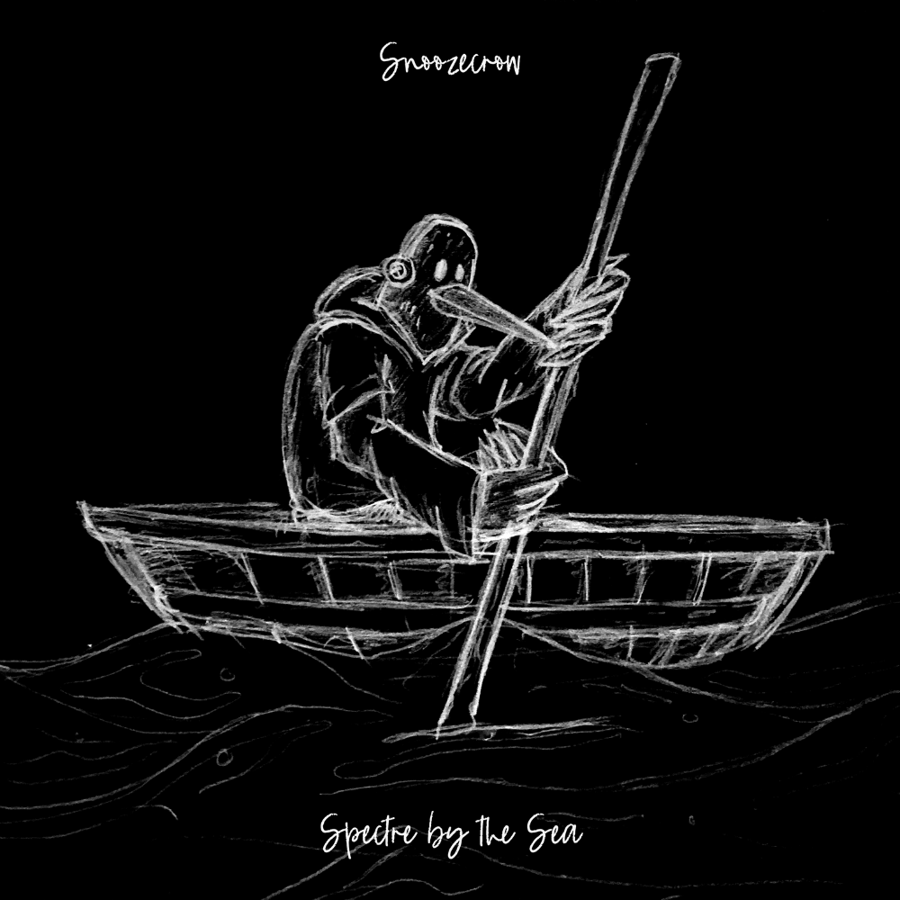

SPECTRE BY THE SEA (CONCEPT)
SNOOZECROW

Snoozecrow is a character long overdue for his debut. Conceptually, he's an ambient musician haunted by a friendly ghost, and
his story is one of managing anxiety through self-soothing and music.
This piece started as an inverted pencil sketch and was the origin of the Snoozecrow moniker —
a project that never fully came to life. You can hear the demos on the left.